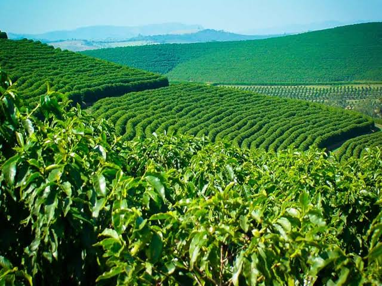
Agriculture is the foundation of food security, rural development, and sustainable livelihoods, making it an essential subject for every young learner.
General Agriculture is the study of the principles and practices used in producing food, fibre, and other useful products from plants and animals. It combines science, technology, economics, and management to help farmers and agricultural workers improve productivity while protecting the environment. Agriculture is not just about farming; it includes crop cultivation, animal husbandry, soil conservation, irrigation, processing, marketing, and agricultural business.
Agriculture turns land, labour, and knowledge into food, income, and national development.
In many countries, agriculture is the main source of employment and raw materials for industries. A strong agriculture sector contributes to food security, employment, export earnings, and rural transformation. Students who learn agriculture gain practical knowledge that can support self-employment, farm management, research, and extension services.
Agricultural ecology studies how crops, animals, soil, water, air, and people interact in farming systems. The environment influences biological processes such as seed germination, plant growth, pest population, and animal performance. Good agricultural planning considers climate, rainfall, temperature, and soil conditions so that farming activities are sustainable and productive.
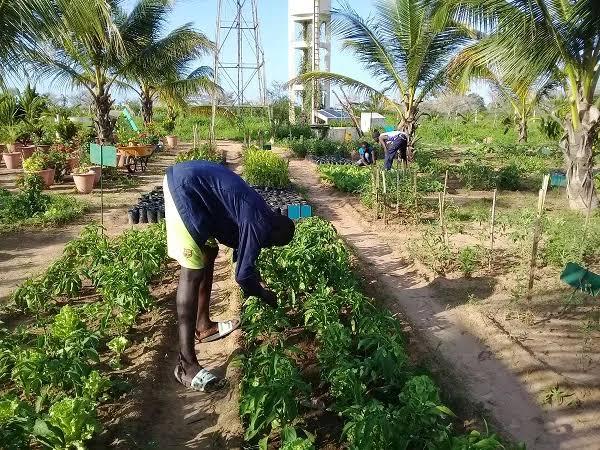
A healthy farm begins with a healthy environment, because every crop and animal depends on balance.
Farmers must protect biodiversity, reduce soil erosion, conserve water, and avoid overuse of chemicals. Sustainable agriculture emphasizes practices such as crop rotation, mulching, composting, agroforestry, and organic manure application to preserve the ecosystem while maintaining yields.
Soil is the natural medium that supports plant growth. It supplies water, nutrients, and anchorage for roots. Soil fertility refers to the soil’s ability to supply essential nutrients in the correct amounts for crops. Important soil properties include texture, structure, porosity, organic matter content, pH, and moisture retention.
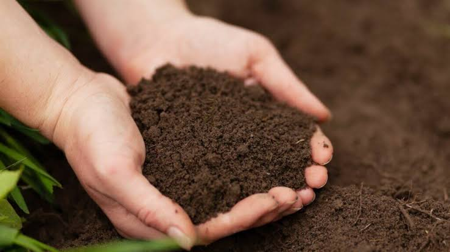
Soil is the farmer’s storehouse of life, holding water, nutrients, and the foundation for every harvest.
Farmers improve soil fertility by adding compost, farmyard manure, green manure, and mineral fertilizers. Soil testing helps determine nutrient deficiencies and supports correct fertilizer recommendations. The most essential nutrients for crops are nitrogen, phosphorus, and potassium, often represented as NPK.
Water is essential for seed germination, nutrient transport, photosynthesis, and cooling plant tissues. In areas of low rainfall, irrigation is used to supply crops with water. Examples of irrigation methods include drip irrigation, sprinkler irrigation, furrow irrigation, and basin irrigation.
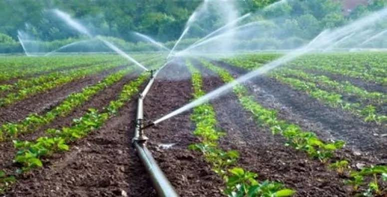
Water management is the difference between a thriving crop and a failed season.
Efficient irrigation helps save water, reduce crop stress, and increase yields. Farmers also use mulching and rainwater harvesting to conserve moisture and protect soil from drying out.
Crop production involves the cultivation of plants for food, feed, fibre, oil, and other products. Crops are classified into food crops, cash crops, vegetable crops, and industrial crops. Important crops include maize, rice, cassava, yam, cocoa, cotton, groundnut, and vegetables.
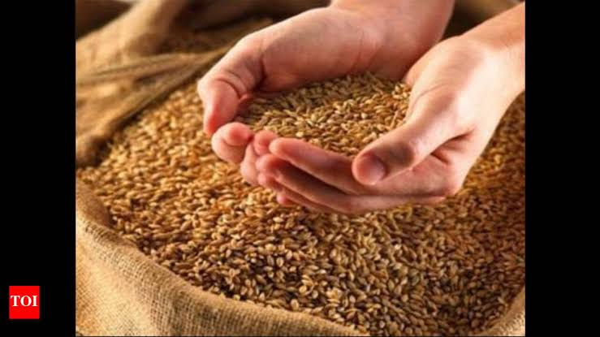
Crop production combines timing, skill, and science to turn a seed into a harvest.
Successful crop production depends on selecting suitable seed varieties, preparing the soil well, controlling weeds, applying fertilizers at the correct time, and protecting crops from pests and diseases.
Planting is the process of placing seeds or planting materials into the soil under suitable conditions. Good planting practices include choosing healthy seeds, correct spacing, proper depth, and timely sowing. Crop management also includes thinning, pruning, irrigation, weeding, fertilizing, and harvesting.
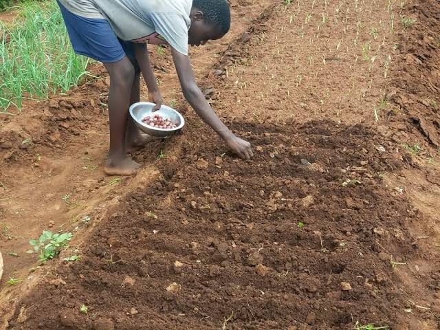
Good management in the field protects yield at every stage of growth.
Pests and diseases can reduce crop quality and yield significantly. Insects, rodents, fungi, bacteria, and viruses are common agricultural threats. Weeds compete with crops for nutrients, water, and sunlight, so they must be controlled early.
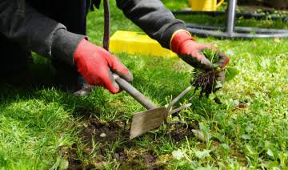
Prevention is cheaper and safer than treating a full crop loss.
Control methods include cultural practices, biological control, mechanical removal, and safe chemical application. Integrated Pest Management (IPM) combines several methods to reduce environmental damage.
Animal production is the branch of agriculture concerned with the raising of livestock and poultry for milk, meat, eggs, and other products. Common animals include cattle, sheep, goats, pigs, rabbits, chickens, and fish. Animal production provides food, manure, hides, and transport services.
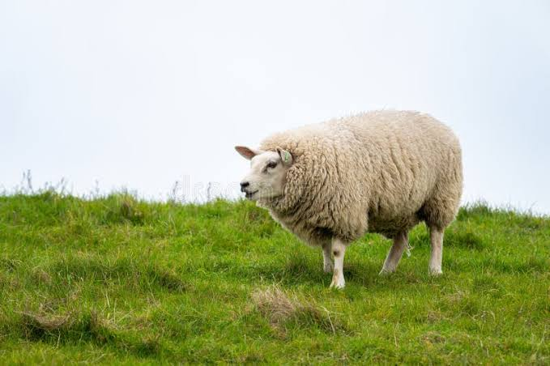
Animal production links nutrition, housing, health, and economics into one complete system.
Livestock and poultry management involves proper housing, breeding, feeding, sanitation, disease control, and record keeping. Good management improves growth performance, reproduction, and production efficiency. Clean shelters, balanced ration, and proper ventilation are essential for healthy animals.
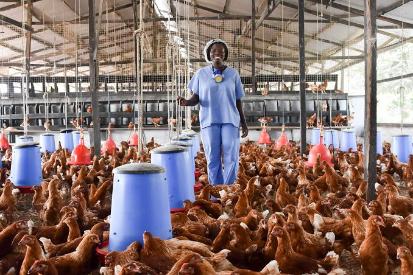
Well-managed animals are productive animals, and productivity supports family income.
Animal nutrition focuses on supplying feed that meets the energy, protein, mineral, and vitamin requirements of animals. A balanced ration supports growth, reproduction, milk production, and egg laying. Health management includes vaccination, deworming, parasite control, and clean water supply.
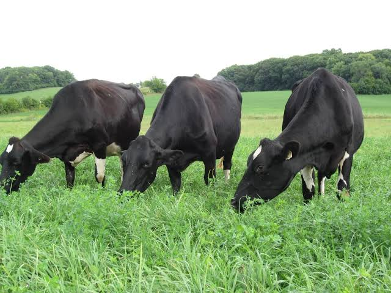
Healthy animals need balanced feed, clean water, and disease prevention.
Agricultural engineering applies scientific and engineering principles to farming tools, machinery, irrigation systems, storage facilities, and processing equipment. Mechanization reduces labour demand and increases efficiency. Tractors, ploughs, harvesters, sprayers, and shellers are common examples.
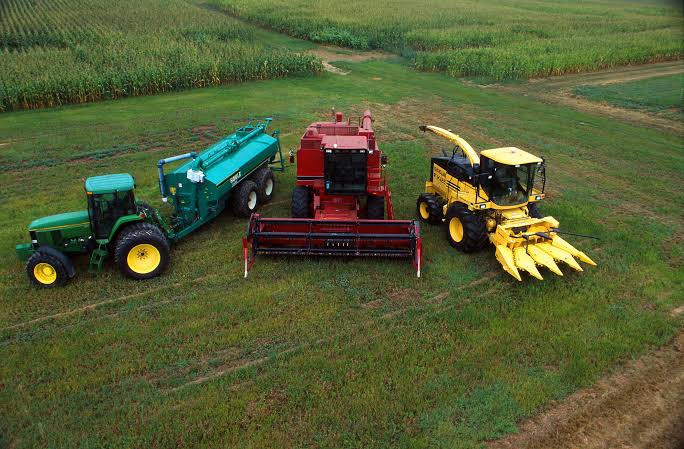
Mechanization helps farmers produce more with less time and effort.
Agricultural economics studies how resources are allocated in farming and how agricultural products are valued. It includes costs, profits, supply, demand, prices, and market trends. Marketing ensures that produce reaches consumers in good condition and at a fair price.
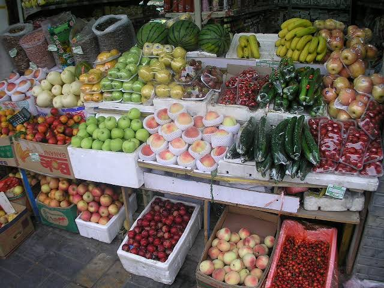
Good farming needs good business decisions, because profit depends on both yield and price.
Farm management involves planning, organizing, and controlling farm activities to achieve efficiency and profit. It includes budgeting, record keeping, labour management, and decision making. Agricultural extension helps farmers gain knowledge, new skills, and improved practices through training and demonstrations.
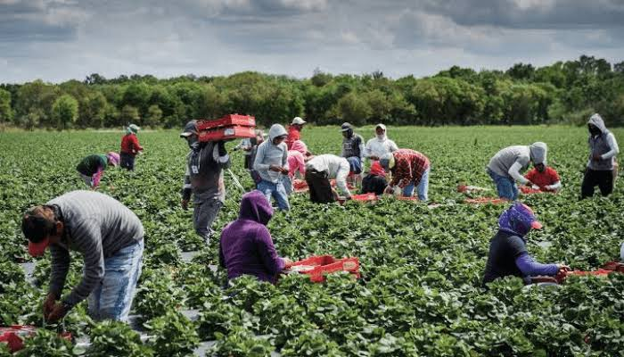
Knowledge shared with farmers becomes productivity, income, and opportunity.
Extension services bridge the gap between research and the farm by communicating improved methods for crop production, animal care, soil fertility, irrigation, and post-harvest handling.